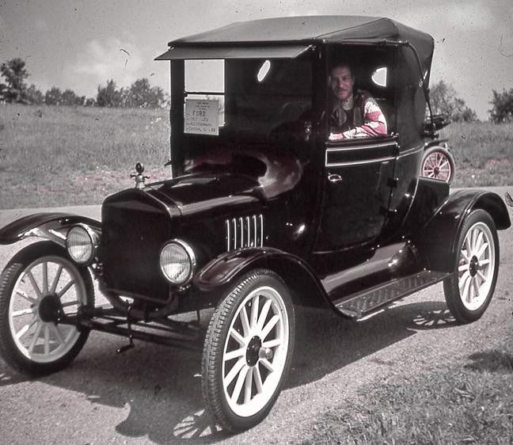
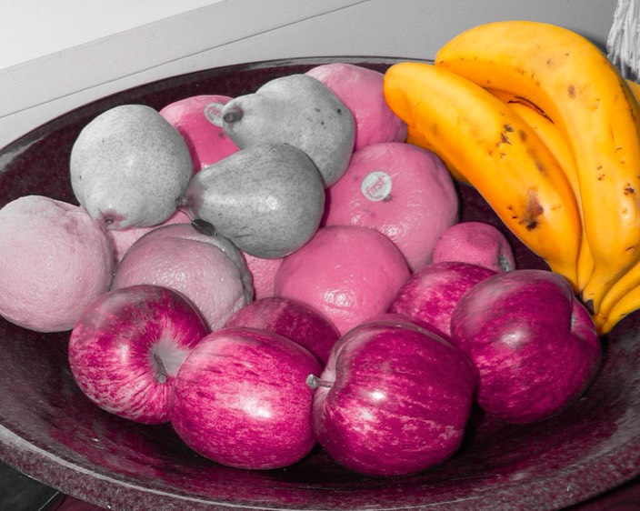

[Note: If you are reading this via RSS, you're better off opening the page so you get the proper photo viewer.]
A couple of weeks ago, I read Shades of Grey, a novel by Jasper Fforde (author of the Thursday Next books).
It was just such a cool book. I just can't stop thinking about it.
Have you ever read a book, and then wished you could see a movie version of it? This is one of those books.
The story is a vaguely dystopian future England, where people live in a social hierarchy separated by color: a colortocracy. No, not skin color, but their eyes. No, not the color of their eyes [hat-tip to Haile Selassie] but people's color perception. Based on what color or colors you can see depends on where you are on the social strata. Purples (who can see red, blue and purple combinations thereof) are at the top; Reds are at the bottom. And greys are the untouchables.
You should read the book. Warning, though: it's the first of a trilogy and the next part isn't due until … 2015. Yeah.
In the meantime, I have gotten somewhat obsessed with what it must be like to only be able to see a part of the spectrum. If somebody were to make a movie of it (say, Gary Ross, who did Pleasantville), viewers would probably want to see the perspective of various characters in the book.
So after some digging around, I finally figured out how to do it, using PhotoShop and Lab color mode. For a "blue" photo, for example, I'd set the "a" channel to 50% gray to remove all red and green, and apply a curve like this to remove all the yellow from the photo.
The result is something like this. A Blue would really appreciate the sky!
{kind=link}
Here's an example of what a Red would see. If you have read the book, you will notice that woman is clearly proud of her spoon, and takes good care of it! There's a lot of red in human flesh tone, so a Red would be pretty fortunate. He or she would also be able to tell when somebody is blushing, but other people wouldn't — much to the relief of the Eddie, the book's Red protagonist.
{kind=link}
Yellows aren't so fortunate with people, but as we'll see further down, at least they can appreciate some of nature's colors.
{kind=link}
Take a look at this photo, then check out what it would look like from various chromatic perspectives:
Here are some examples of how people might be perceived.
This ruined tower scene doesn't hold much for Reds.
To finish up, here's a Red's perspective of a man in a Model T, and a Red's perspective of a plate of fruit — the bananas are artificially colored, of course!
Photos from Flickr. All modifications (cc).
Ruined Barn photo credit: .aditya. cc
Woman using spoon photo credit: bigredpenguin cc
Man using spoon photo credit: Aplomb cc
Garden Wall photo credit: UGArdener cc
Kids photo credit: sharkbait cc
Tower photo credit: cookipediachef cc
Fruits photo credit: Sandy Austin cc
Model T photo credit: dok1 cc
via photopin
Dear nitpickers: This is just based on fiction, so please don't worry about any disagreements you have with human color perception, color modeling, or the likelihood of Model T cars surviving the Something That Happened.
Dear Mr. Fforde: Hurry up with that next book! And let's have a movie of this! KTHXBYE.